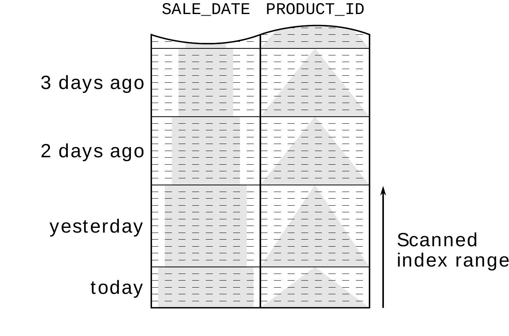

Chương 6
Sắp xếp và gom nhóm
Sorting là một operation rất tốn resource. Sorting cần khá nhiều CPU time, nhưng vấn đề chính là database phải tạm thời buffer kết quả. Suy cho cùng, sort operation phải đọc hết toàn bộ input rồi mới tạo ra được output đầu tiên. Sort operation không thể thực thi theo kiểu pipelined — và điều này có thể thành vấn đề với data set lớn.
Index biểu diễn dữ liệu được index theo một thứ tự xác định — nguyên tắc này đã được mô tả trong Chapter 1. Cũng có thể nói index lưu dữ liệu ở dạng đã được sort sẵn. Thực tế, index được sort giống hệt như khi bạn dùng index definition làm order by clause. Vì vậy, không có gì bất ngờ khi ta có thể dùng index để khỏi phải chạy sort operation mà vẫn đáp ứng được order by clause.
Trớ trêu là với data set lớn, INDEX RANGE SCAN cũng trở nên kém hiệu quả — nhất là khi theo sau nó là bước truy cập table. Điều này có thể triệt tiêu phần lợi có được nhờ tránh sort operation. Trong trường hợp này, FULL TABLE SCAN kèm explicit sort operation thậm chí có thể còn nhanh hơn. Một lần nữa, đánh giá các execution plan khác nhau và chọn ra plan tốt nhất là nhiệm vụ của optimizer.
Tuy nhiên, khi thực thi order by bằng index, database không chỉ đỡ được công sort mà còn có thể trả về những kết quả đầu tiên khi chưa xử lý hết input data. Nhờ vậy, order by được thực thi theo kiểu pipelined. Chapter 7, “Partial Results”, giải thích cách khai thác pipelined execution để implement pagination query hiệu quả. Chính điều này khiến pipelined order by quan trọng đến mức tôi gọi nó là power thứ ba của indexing.
Chương này giải thích cách dùng index để thực thi order by theo kiểu pipelined. Muốn vậy, ta phải đặc biệt chú ý đến tương tác với where clause, cũng như các modifier ASC và DESC. Cuối chương, ta sẽ áp dụng các kỹ thuật này cho cả group by clause.
Lập index cho ORDER BY#
Một SQL query có order by clause không cần sort kết quả một cách tường minh nếu index liên quan đã trả về các row theo đúng thứ tự cần thiết. Nói cách khác, chính index được dùng cho where clause cũng phải cover luôn order by clause. Ví dụ, xét query sau, lấy các sale của ngày hôm qua, sắp xếp theo ngày bán và product ID:
SELECT sale_date, product_id, quantity
FROM sales
WHERE sale_date = TRUNC(sysdate) - INTERVAL '1' DAY
ORDER BY sale_date, product_id;Đã có sẵn một index trên SALE_DATE dùng được cho where clause. Tuy nhiên, database vẫn phải thực hiện explicit sort operation để đáp ứng order by clause:
---------------------------------------------------------------
|Id | Operation | Name | Rows | Cost |
---------------------------------------------------------------
| 0 | SELECT STATEMENT | | 320 | 18 |
| 1 | SORT ORDER BY | | 320 | 18 |
| 2 | TABLE ACCESS BY INDEX ROWID| SALES | 320 | 17 |
|*3 | INDEX RANGE SCAN | SALES_DATE | 320 | 3 |
---------------------------------------------------------------Dù sao thì INDEX RANGE SCAN vốn đã trả kết quả theo thứ tự của index. Để tận dụng điều này, ta chỉ cần mở rộng index definition sao cho nó tương ứng với order by clause:
DROP INDEX sales_date;
CREATE INDEX sales_dt_pr ON sales (sale_date, product_id);---------------------------------------------------------------
|Id | Operation | Name | Rows | Cost |
---------------------------------------------------------------
| 0 | SELECT STATEMENT | | 320 | 300 |
| 1 | TABLE ACCESS BY INDEX ROWID| SALES | 320 | 300 |
|*2 | INDEX RANGE SCAN | SALES_DT_PR | 320 | 4 |
---------------------------------------------------------------Operation SORT ORDER BY đã biến mất khỏi execution plan, dù query vẫn có order by clause. Database tận dụng thứ tự của index và bỏ qua explicit sort operation.
Dù execution plan mới có ít operation hơn, cost value lại tăng đáng kể vì clustering factor của index mới tệ hơn (xem “Automatically Optimized Clustering Factor” ở trang 133). Tạm thời, bạn chỉ cần lưu ý rằng cost value không phải lúc nào cũng phản ánh tốt execution effort.
Để có optimization này, chỉ cần index range được scan đã được sort theo order by clause là đủ. Vì thế, trong ví dụ cụ thể này, optimization vẫn hoạt động khi chỉ sort theo PRODUCT_ID:
SELECT sale_date, product_id, quantity
FROM sales
WHERE sale_date = TRUNC(sysdate) - INTERVAL '1' DAY
ORDER BY product_id;Trong Figure 6.1, ta thấy PRODUCT_ID là sort criterion duy nhất có ý nghĩa trong index range được scan. Do đó, trong index range này, thứ tự của index tương ứng với order by clause, nên database có thể bỏ qua sort operation.

Optimization này có thể gây ra behavior bất ngờ khi mở rộng index range được scan:
SELECT sale_date, product_id, quantity
FROM sales
WHERE sale_date >= TRUNC(sysdate) - INTERVAL '1' DAY
ORDER BY product_id;Query này không lấy các sale của hôm qua mà lấy tất cả sale kể từ hôm qua. Tức là query trải trên nhiều ngày và scan một index range không còn được sort thuần theo PRODUCT_ID. Nếu nhìn lại Figure 6.1 và mở rộng index range được scan xuống phía dưới, ta sẽ thấy lại xuất hiện các giá trị PRODUCT_ID nhỏ hơn. Vì vậy, database phải dùng explicit sort operation để đáp ứng order by clause.
---------------------------------------------------------------
|Id |Operation | Name | Rows | Cost |
---------------------------------------------------------------
| 0 |SELECT STATEMENT | | 320 | 301 |
| 1 | SORT ORDER BY | | 320 | 301 |
| 2 | TABLE ACCESS BY INDEX ROWID| SALES | 320 | 300 |
|*3 | INDEX RANGE SCAN | SALES_DT_PR | 320 | 4 |
---------------------------------------------------------------Nếu database dùng sort operation trong khi bạn kỳ vọng pipelined execution, có thể có 2 lý do: (1) execution plan có explicit sort operation có cost value tốt hơn; (2) thứ tự của index trong index range được scan không tương ứng với order by clause.
Một cách đơn giản để phân biệt 2 trường hợp này là dùng full index definition trong order by clause — tức là chỉnh query cho khớp với index để loại trừ nguyên nhân thứ hai. Nếu database vẫn dùng explicit sort operation thì optimizer ưu tiên plan này vì cost value của nó; ngược lại, database không thể dùng index cho order by clause ban đầu.
Trong cả 2 trường hợp, có thể bạn sẽ tự hỏi liệu có cách nào đạt được pipelined order by execution không, và nếu có thì bằng cách nào. Để trả lời, bạn có thể chạy query với full index definition trong order by clause rồi xem kết quả. Bạn thường sẽ nhận ra mình đã hình dung sai về index: thứ tự của index đúng là không như order by clause ban đầu yêu cầu, nên database không thể dùng index để tránh sort operation.
Nếu optimizer ưu tiên explicit sort operation vì cost value, thường là do optimizer chọn execution plan tốt nhất cho việc thực thi toàn bộ query. Nói cách khác, optimizer chọn execution plan lấy được record cuối cùng nhanh nhất. Nếu database phát hiện application chỉ fetch vài row đầu tiên, khi đó database có thể chuyển sang ưu tiên indexed order by. Chapter 7, “Partial Results”, giải thích các optimization method tương ứng.
Lập index với ASC, DESC và NULLS FIRST/LAST#
Database có thể đọc index theo cả 2 chiều. Vì vậy, pipelined order by cũng khả thi khi index range được scan có thứ tự ngược hẳn với thứ tự chỉ định trong order by clause. Dù các modifier ASC và DESC trong order by clause có thể ngăn pipelined execution, hầu hết database đều có cách đơn giản để đổi thứ tự của index, giúp index dùng được cho pipelined order by.
Ví dụ sau dùng index theo thứ tự ngược. Query này trả về các sale kể từ hôm qua, sắp theo ngày giảm dần và PRODUCT_ID giảm dần.
SELECT sale_date, product_id, quantity
FROM sales
WHERE sale_date >= TRUNC(sysdate) - INTERVAL '1' DAY
ORDER BY sale_date DESC, product_id DESC;Execution plan cho thấy database đọc index theo chiều giảm dần.
---------------------------------------------------------------
|Id |Operation | Name | Rows | Cost |
---------------------------------------------------------------
| 0 |SELECT STATEMENT | | 320 | 300 |
| 1 | TABLE ACCESS BY INDEX ROWID | SALES | 320 | 300 |
|*2 | INDEX RANGE SCAN DESCENDING| SALES_DT_PR | 320 | 4 |
---------------------------------------------------------------Trong trường hợp này, database dùng index tree để tìm entry khớp cuối cùng. Từ đó, database đi theo leaf node chain “ngược lên trên” như trong Figure 6.2. Suy cho cùng, đây chính là lý do database dùng doubly linked list để xây dựng leaf node chain.
Đương nhiên, điều cốt yếu là index range được scan phải có thứ tự ngược hẳn với thứ tự mà order by clause cần.

Ví dụ sau không thỏa điều kiện tiên quyết này, vì order by clause của nó trộn lẫn modifier ASC và DESC:
SELECT sale_date, product_id, quantity
FROM sales
WHERE sale_date >= TRUNC(sysdate) - INTERVAL '1' DAY
ORDER BY sale_date ASC, product_id DESC;Trước tiên, query phải trả về các sale của hôm qua theo PRODUCT_ID giảm dần, sau đó mới đến các sale của hôm nay, cũng theo PRODUCT_ID giảm dần. Figure 6.3 minh họa quá trình này. Để lấy các sale theo đúng thứ tự yêu cầu, database sẽ phải “jump” trong lúc index scan.
order by theo kiểu pipelined
Tuy nhiên, trong index không có link nào đi từ sale hôm qua có PRODUCT_ID nhỏ nhất sang sale hôm nay có PRODUCT_ID lớn nhất. Vì vậy, database không thể dùng index này để tránh explicit sort operation.
Với những trường hợp như vậy, hầu hết database đều có cách đơn giản để chỉnh thứ tự của index cho khớp với order by clause. Cụ thể, bạn có thể dùng modifier ASC và DESC ngay trong index declaration:
DROP INDEX sales_dt_pr;
CREATE INDEX sales_dt_pr
ON sales (sale_date ASC, product_id DESC);Giờ thì thứ tự của index đã tương ứng với order by clause, nên database có thể bỏ qua sort operation:
---------------------------------------------------------------
|Id | Operation | Name | Rows | Cost |
---------------------------------------------------------------
| 0 | SELECT STATEMENT | | 320 | 301 |
| 1 | TABLE ACCESS BY INDEX ROWID| SALES | 320 | 301 |
|*2 | INDEX RANGE SCAN | SALES_DT_PR | 320 | 4 |
---------------------------------------------------------------Figure 6.4 cho thấy thứ tự mới của index. Có thể nói, việc đổi chiều sort của column thứ hai đã đảo chiều các mũi tên trong hình trước. Nhờ vậy, mũi tên thứ nhất kết thúc đúng chỗ mũi tên thứ hai bắt đầu, nên index chứa các row theo đúng thứ tự mong muốn.

ASC/DESC indexing chỉ cần thiết khi phải sort từng column theo các chiều ngược nhau. Không cần dùng nó để đảo thứ tự của tất cả column, vì database vẫn có thể đọc index theo thứ tự giảm dần khi cần — ngoại lệ duy nhất là secondary index trên index-organized table. Secondary index ngầm thêm clustering key vào index mà không cho bạn cách nào để chỉ định sort order. Nếu cần sort clustering key theo thứ tự giảm dần, bạn không còn lựa chọn nào khác ngoài việc sort tất cả column còn lại theo thứ tự giảm dần. Khi đó, database có thể đọc index theo chiều ngược để có được thứ tự mong muốn.
Ngoài ASC và DESC, SQL standard còn định nghĩa hai modifier ít ai biết cho order by clause: NULLS FIRST và NULLS LAST. Khả năng kiểm soát tường minh cách sort NULL mới “gần đây” được đưa vào SQL:2003 dưới dạng một optional extension. Hệ quả là các database hỗ trợ nó khá thưa thớt. Điều này đặc biệt đáng lo, vì standard không định nghĩa chính xác sort order của NULL. Standard chỉ quy định mọi NULL phải đứng liền nhau sau khi sort, chứ không nói chúng nằm trước hay sau các entry khác. Nói một cách chặt chẽ, để có behavior được định nghĩa rõ ràng, bạn thực ra cần chỉ định cách sort NULL cho mọi column có thể nhận NULL trong order by clause.
Tuy nhiên, thực tế là cả SQL Server 2012 lẫn MySQL 5.6 đều chưa implement optional extension này. Ngược lại, Oracle database đã hỗ trợ NULLS sorting từ trước khi nó được đưa vào standard, nhưng tính đến release 11g, Oracle vẫn không chấp nhận nó trong index definition. Vì vậy, Oracle database không thể thực hiện pipelined order by khi sort với
NULLS FIRST. Chỉ PostgreSQL database (từ release 8.3) hỗ trợ modifier NULLS trong cả order by clause và index definition.
Bảng tổng quan sau tóm tắt các feature mà từng database hỗ trợ.

Lập index cho GROUP BY#
SQL database dùng hai thuật toán group by hoàn toàn khác nhau. Thuật toán thứ nhất là hash algorithm: nó aggregate các input record trong một hash table tạm thời. Khi đã xử lý xong mọi input record, hash table này được trả về làm kết quả. Thuật toán thứ hai là sort/group algorithm: trước hết, nó sort input data theo grouping key để các row của cùng một group nằm liền kề nhau. Sau đó, database chỉ cần aggregate chúng. Nói chung, cả hai thuật toán đều cần materialize một intermediate state, nên không được thực thi theo kiểu pipelined. Tuy vậy, sort/group algorithm có thể dùng index để tránh sort operation, nhờ đó cho phép thực hiện pipelined group by.
Xét query sau. Query này trả về doanh thu của ngày hôm qua, nhóm theo PRODUCT_ID:
SELECT product_id, sum(eur_value)
FROM sales
WHERE sale_date = TRUNC(sysdate) - INTERVAL '1' DAY
GROUP BY product_id;Với index trên SALE_DATE và PRODUCT_ID từ phần trước, sort/group algorithm phù hợp hơn, vì INDEX RANGE SCAN tự động trả về các row theo đúng thứ tự cần thiết. Tức là database tránh được materialization vì không cần explicit sort operation — group by được thực thi theo kiểu pipelined.
---------------------------------------------------------------
|Id |Operation | Name | Rows | Cost |
---------------------------------------------------------------
| 0 |SELECT STATEMENT | | 17 | 192 |
| 1 | SORT GROUP BY NOSORT | | 17 | 192 |
| 2 | TABLE ACCESS BY INDEX ROWID| SALES | 321 | 192 |
|*3 | INDEX RANGE SCAN | SALES_DT_PR | 321 | 3 |
---------------------------------------------------------------Execution plan của Oracle database đánh dấu một operation SORT GROUP BY chạy theo kiểu pipelined bằng phần bổ sung NOSORT. Execution plan của các database khác thì hoàn toàn không nhắc đến sort operation nào.
Pipelined group by có cùng điều kiện tiên quyết như pipelined order by, chỉ khác là không có modifier ASC và DESC. Vì vậy, việc khai báo index với modifier ASC/DESC lẽ ra không ảnh hưởng đến pipelined group by execution. Điều tương tự cũng đúng với NULLS FIRST/LAST. Tuy vậy, có những database không thể dùng đúng cách một index ASC/DESC cho pipelined group by.
Nếu mở rộng query để xét tất cả sale kể từ hôm qua, như ta đã làm trong ví dụ về pipelined order by, thì pipelined group by sẽ không còn khả thi, với cùng lý do như trước: INDEX RANGE SCAN không trả về các row theo thứ tự của grouping key (so sánh Figure 6.1 ở trang 131).
SELECT product_id, sum(eur_value)
FROM sales
WHERE sale_date >= TRUNC(sysdate) - INTERVAL '1' DAY
GROUP BY product_id;---------------------------------------------------------------
|Id |Operation | Name | Rows | Cost |
---------------------------------------------------------------
| 0 |SELECT STATEMENT | | 24 | 356 |
| 1 | HASH GROUP BY | | 24 | 356 |
| 2 | TABLE ACCESS BY INDEX ROWID| SALES | 596 | 355 |
|*3 | INDEX RANGE SCAN | SALES_DT_PR | 596 | 4 |
---------------------------------------------------------------Thay vào đó, Oracle database dùng hash algorithm. Ưu điểm của hash algorithm là chỉ cần buffer kết quả đã aggregate, trong khi sort/group algorithm materialize toàn bộ input set. Nói cách khác, hash algorithm cần ít memory hơn.
Cũng như với pipelined order by, thực thi nhanh không phải là khía cạnh quan trọng nhất của pipelined group by execution. Quan trọng hơn là database thực thi nó theo kiểu pipelined và trả về kết quả đầu tiên trước khi đọc hết toàn bộ input. Đây là điều kiện tiên quyết cho các optimization method nâng cao được giải thích trong chương tiếp theo.